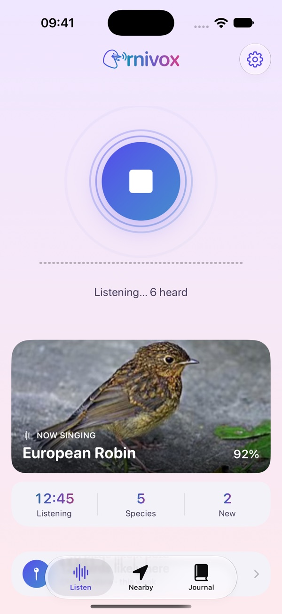

Every bird has a voice. Ornivox tells you whose it is: it identifies birds by their song, on your iPhone, iPad or Apple Watch, even deep in the forest with no signal.
- Free
- Works offline
- No tracking
- EN · DE · ES · FR
Ornivox is in public beta while it waits for App Store review. TestFlight is Apple's free app for trying apps before they're released.

Stand still, listen, and find out who is singing.
Made for curious ears.
- Walkers & hikers
- Birders
- Families
- Blind & low-vision birders
On iPhone, iPad and Apple Watch
The whole identification runs on each device by itself. Leave the phone in your bag and listen from your wrist, with your hands free for binoculars.
What it does
Private by design
Ornivox listens to the world around you, so it has to be careful with what it hears. Birds are identified on your device, and nothing you record goes to a server.
- On your deviceIdentification uses BirdNET from the Cornell Lab of Ornithology, running offline on your iPhone, iPad or Apple Watch.
- Voices are discardedAny moment in which Ornivox hears a human voice is thrown away and never stored. Only three-second bird clips you keep in the journal are saved.
- No account, no trackingNo sign-in, no ads, no analytics. Your journal syncs through your own private iCloud, if you use it. I never see it.
Online only when it helps: to add the weather to a journal entry, Ornivox asks Apple Weather about a place rounded to about a kilometre. Read the full privacy policy.
Questions
How do I get it?
Ornivox is waiting for App Store review. Until then it's a free public beta: install Apple's TestFlight app, then open the beta link on your iPhone or iPad. The Apple Watch app comes with it.
Is it really free?
Yes. No ads, no subscription, nothing to unlock. It's non-commercial, as the BirdNET license asks. You can chip in on the support page if you'd like.
Does it work without signal?
Yes. Identification, the field guide and the journal all work offline. Only the weather for a journal entry, maps and source links need the internet, and they wait until you're back online.
How many birds does it know?
More than 6,000 species worldwide. Your location and the season narrow them to the ones likely around you, which makes the results far more reliable.
What do I need?
An iPhone or iPad with iOS 26, and optionally an Apple Watch with watchOS 26. Summaries and suggested notes need a device with Apple Intelligence; everything else works on all of them.
Is it accessible?
Ornivox can speak every bird it hears, also with the screen locked, works fully with VoiceOver, Voice Control and Siri, and follows your text size up to the largest settings. Accessibility details.
Which languages?
The app is in English, German, Spanish and French, and follows your device language. Bird names and descriptions are in English, German and Spanish; French names are coming.
Try the beta, free
On iPhone, iPad and Apple Watch. No account, no ads, no signal needed.
Join the beta on TestFlight1. Install TestFlight from the App Store. 2. Open the beta link on your iPhone or iPad. 3. Tap Install.